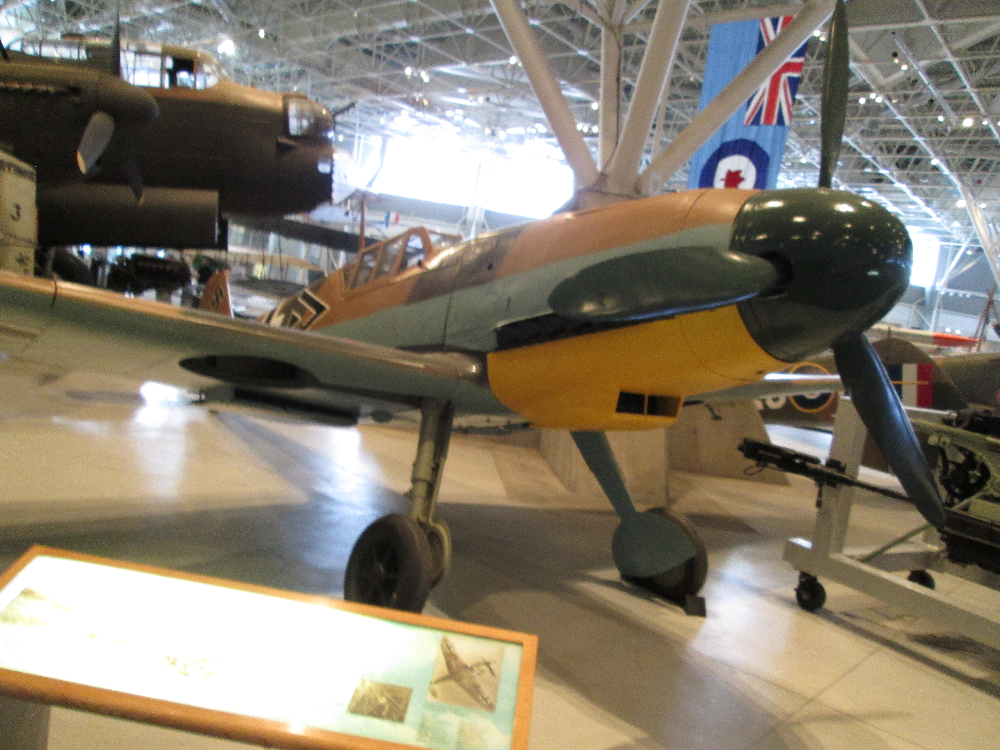
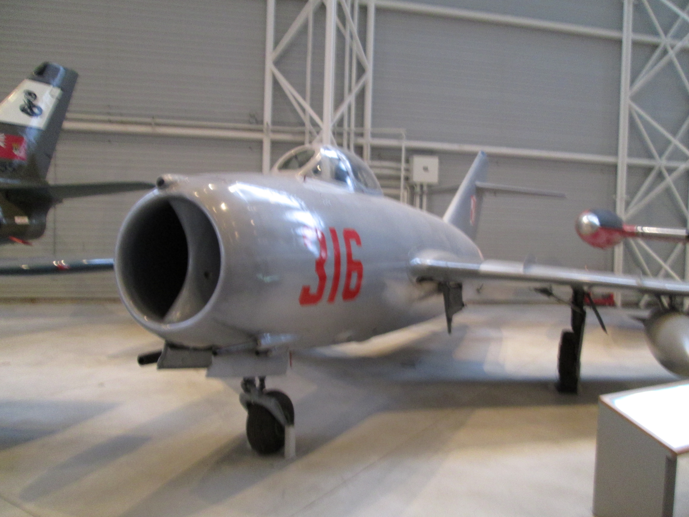
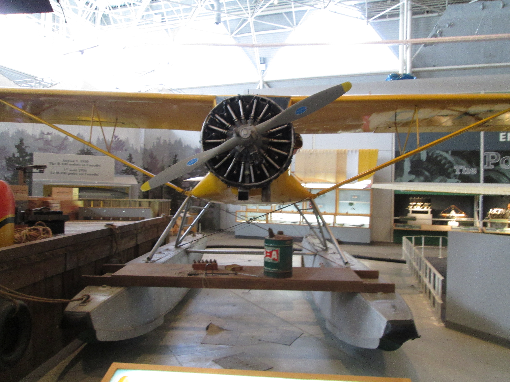

Early Planes
 It was not until the dawn of the gasoline motor that man was finally able to truly conquer the skies.
Previous attempts made use of balloons and the like but lacked any real speed or ability to
control where one was going. But out of the darkness came the aeroplane. The Wright Brothers were the first
and those that followed explored the new field with great vigour. The movie "Those Magnificent Men in Their
Flying Machines" is highly recommended as it presents a decent picture of the sheer variety of designs thought of at the time.
To the right is an example of a rather common Wright Brothers derived plane. It features the
iconic biplane design with the engine and controls built into the wings. These style of planes would not last
too long as especially with WWI, people moved to more effective designs such as the Sopwith Camel. These planes
were much more powerful than the early prototypes, and featured a reduced wingspan that allowed for more aerial
acrobatics.
It was not until the dawn of the gasoline motor that man was finally able to truly conquer the skies.
Previous attempts made use of balloons and the like but lacked any real speed or ability to
control where one was going. But out of the darkness came the aeroplane. The Wright Brothers were the first
and those that followed explored the new field with great vigour. The movie "Those Magnificent Men in Their
Flying Machines" is highly recommended as it presents a decent picture of the sheer variety of designs thought of at the time.
To the right is an example of a rather common Wright Brothers derived plane. It features the
iconic biplane design with the engine and controls built into the wings. These style of planes would not last
too long as especially with WWI, people moved to more effective designs such as the Sopwith Camel. These planes
were much more powerful than the early prototypes, and featured a reduced wingspan that allowed for more aerial
acrobatics.
World War 2 Planes
 The second world war led to massive advancements in airplane design. The biplane design that was once so common died out in favour of the monoplane with a hard shell of aluminum. This era was also a major point where designers realised the advantages of larger engines. The main goal of this was the increased speed, however there were also other advantagges that led to future aircraft prioritizing raw power in engines. Larger engines allowed for shorter wings, and especially with jet engines increased fuel economy. Jets were another major change as by the end of the war both Germany and Britain had jet powered aircraft in service and other nations were working on it. Jets allowed for higher service ceilings and significantly greater speed. While piston engined aircraft would change around for a bit after the war in the following decades jets took over. To the right is an image of a typical Axis power fighter plane from World War 2 with its Luftwaffe markings.
Cold War and the Jet Revolution
 The advances made over the course of WWII in jet technology continued into the Cold War. Spurred on by the massive amounts spent on military research both the Americans and USSR pushed the limits of what was once thought possible. Supersonic jets became a harsh reality as the once primitive weapon, the fighter, began to act as bombers as well. Gone were the 50. calibre machine guns and the auto cannons. Enter the targetted missile. Where a pilot once had to duck and chase the enemy they now simply have to be the first to fire and victory is assured. Due to this it is highly unlikely that we will ever see a great air battle such as the Battle of Britain again. The advances of the Cold War have resulted in the unification of the fighter and bomber into a single airframe focused more on air to ground attacks than dogfights. The technology has now been developed to the point that a dogfight is simply too costly for either side.
Bush Planes
 An area in which many of the WWII era designs lived on is the bush plane. These essential aircraft are designed for servicing the remotest region in North America. Specifically the areas deep in the muskeg and tundra. These planes are based on a simple premise. The larger the engine the less wingspan is required. This allows for very powerful planes capable of landing on narrow landing strips and lakes. The iconic bush plane is the De Havilland Beaver. These planes are still in service today decades after being made. The Beaver, like many bush planes, is powered by a WWII surplus fighter engine. These engines produce immense power, especially when attached to such a small airframe as most bush planes. While the air forces of the world had no further use for them, these motors have been and continue to be essential lifelines for northern communities in Canada and Alaska. Where there are no roads or trains there are bush planes.